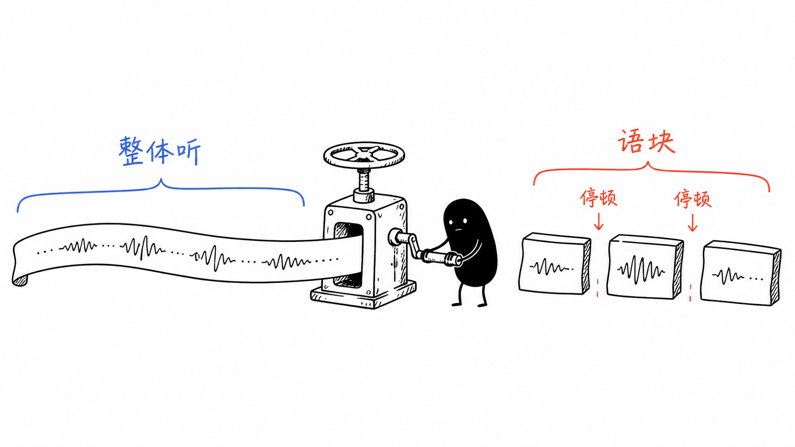
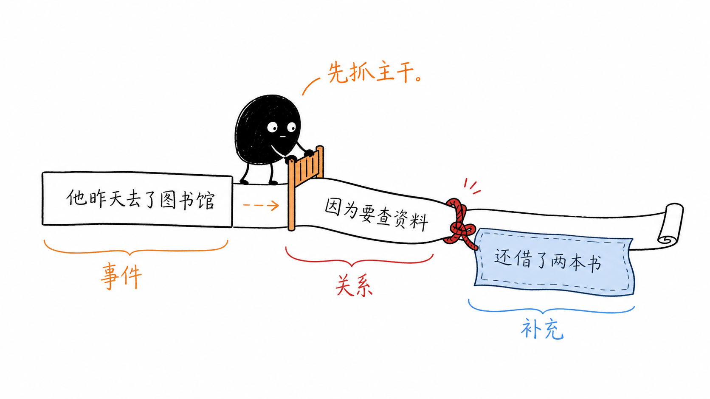
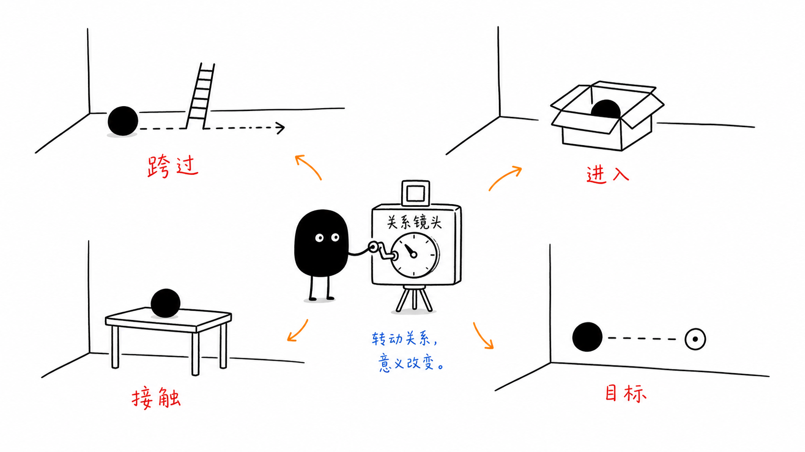
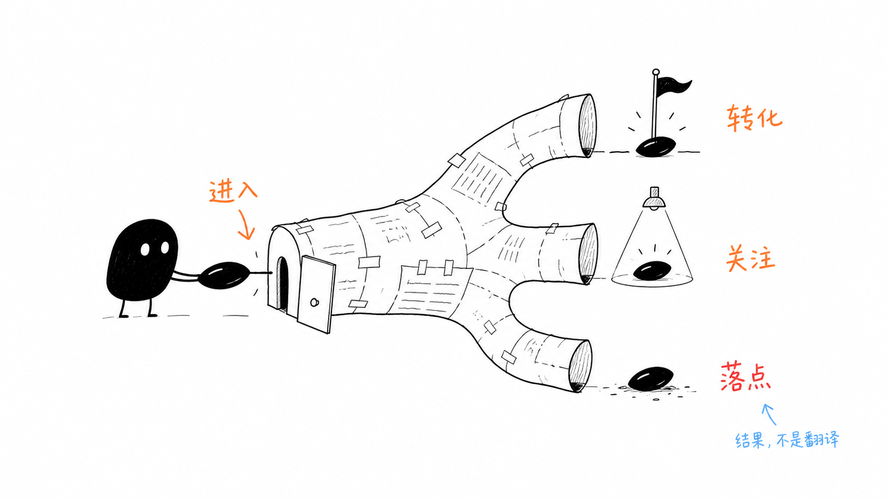
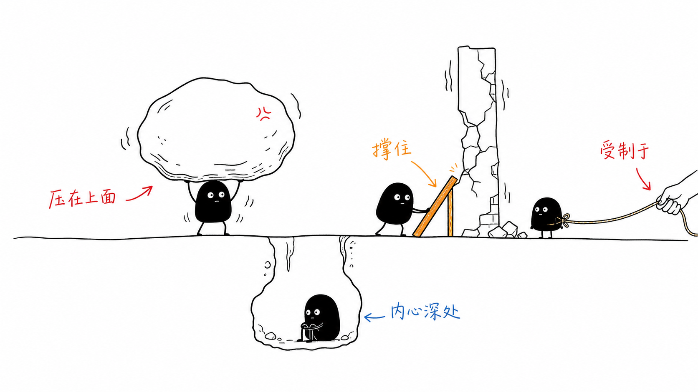
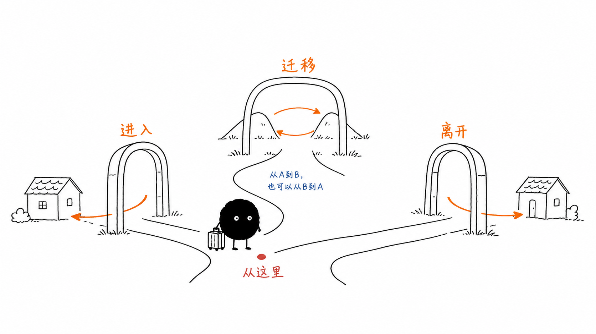
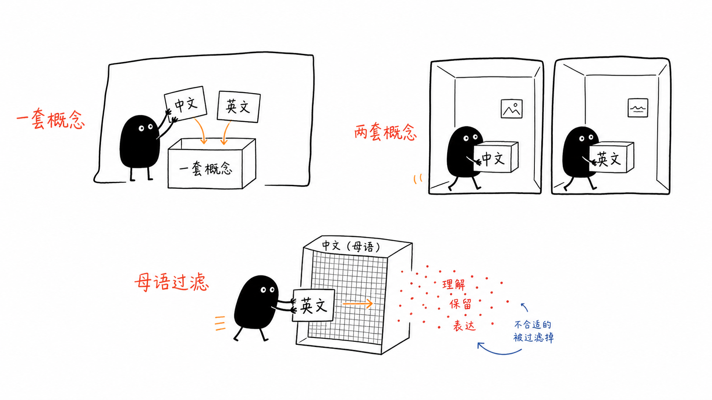
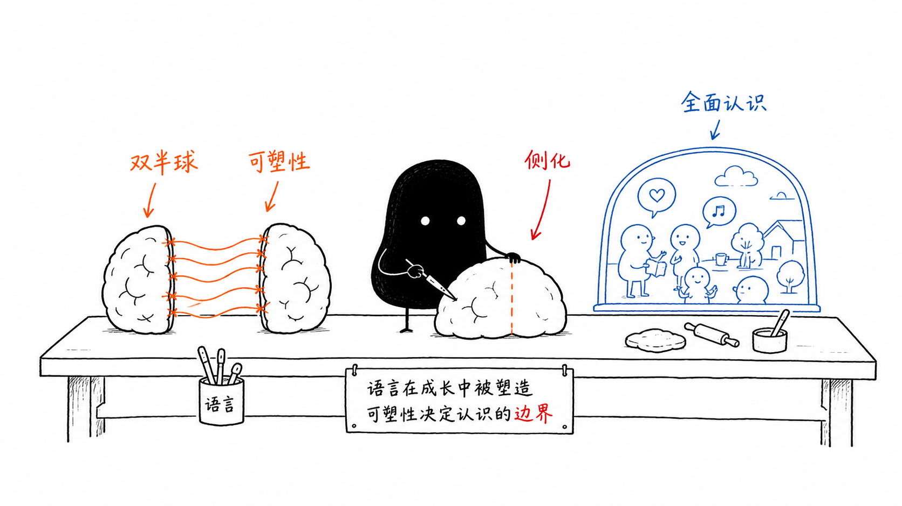
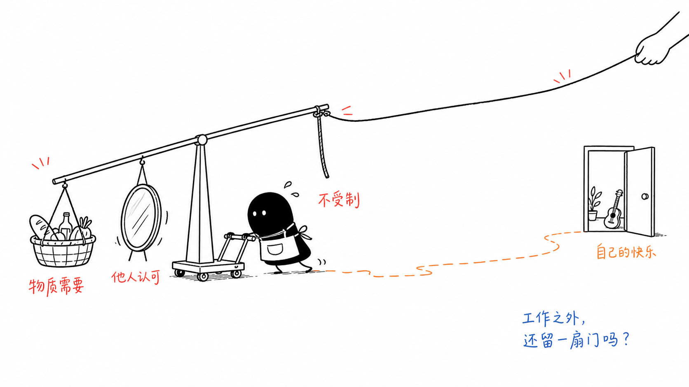

英语听力语块与底层逻辑
沿用 English OS 3.0 的“画面 → 关系 → 表达”学习系统
这不是单词表，而是一份把听力输入、语块记忆、空间画面、疑问词和句子逻辑放在同一套系统中的学习笔记。

总原则：不要先问“每个词是什么意思”，先问“这一段在做什么”。
一、这份笔记怎么使用
每个重点表达都尽量按同一套顺序学习：先看空间或动作画面，再判断词与词之间的关系，然后把短语作为一个整体放回句子，最后回到听力中的停顿、重音和信息层次。
统一操作顺序：听到声音 → 切出语块 → 找核心事件 → 判断关系 → 还原句子 → 跟读输出
语块思维：短语不是几个词临时拼起来，而是一个可以整体调用的表达单元。
空间画面：介词和短语中的关系先用位置、方向、支撑、压力、边界来理解。
句子骨架：先确认谁在什么情况下做了什么，再把原因、转折、结果和补充接上去。
听力训练：第一遍抓事件，第二遍找语块边界，第三遍模仿语音和节奏。
二、听力输入：先抓语块，不逐词搬运

语块是声音、意义和句子结构的共同单位。
照片中的发音分析已经用斜线标出了多个意群。这里不把斜线理解成机械停顿，而把它看成听者的“信息分组”：主句先建立事件，because、while、although、as、that、who 等关系词再把新信息挂接上去。
2.1 例句：双语者文章的句子骨架
Children learn languages more easily / because the plasticity of their developing brains / lets them use both hemispheres.
核心事件：Children learn languages more easily。原因：the plasticity of their developing brains。原因内部的动作：lets them use both hemispheres。听力时先把主句听完整，再把 because 后面的解释挂回去。
The philosophy and practice of 996 / is complex. / Most of the employees that we interviewed / evidently knew / that they were sacrificing their physical and mental health, / but they still persevere.
这句话的听力重点不是记住每一个单词，而是依次识别：主题对象 → 判断 → 定语从句 → that 引出的内容 → but 转折。
2.2 听力中的四种信息层次
层次 |
听力判断方法 |
事件 |
谁 / 什么 + 做了什么。先建立句子承重结构。 |
关系 |
because、but、while、although、as、so that 等告诉你下一块信息与上一块是什么关系。 |
补充 |
who、whose、that、when、where 等把说明信息接到前面的名词或事件上。 |
结果 |
translate into、end up、so that、as a result 等把前面的动作落到后果或目标。 |
三、空间画面：介词是关系镜头

介词先回答“对象之间如何摆放或移动”，再扩展到抽象关系。
介词不应该只背一个中文意思。更稳的方法是先建立一个空间画面：对象在哪里、向哪里移动、是否接触、是否受到支撑、是否被某种力量控制。抽象用法往往是这个空间关系的延伸。
语块 |
空间画面 |
底层理解 |
across the board |
横向跨过整块板面 |
影响覆盖所有部门、所有层级或所有方面。 |
on the face of it |
停留在表面看到的那一层 |
从表面证据看起来是这样，但不一定等于深层事实。 |
have nothing to do with |
两者之间没有连线 |
某人或某事不参与、不涉及、不构成原因。 |
excel at |
在某个领域的高点上表现突出 |
在某个活动或能力范围内超过一般水平。 |
unimpeded by worries |
前进路径没有被障碍挡住 |
没有被担忧、顾虑或阻碍拖住。 |
四、路径进入结果：短语如何从空间变成抽象意义

很多短语是在表达“进入某种状态”或“最后落到某个结果”。
表达 |
动作画面 |
听力中的整体意思 |
translate into |
从一种状态进入另一种状态 |
前面的行为最终带来后面的结果。 |
come into the spotlight |
进入聚光灯的范围 |
获得大量公众注意，成为焦点。 |
come to public attention |
进入公众视野 |
某件事被公众注意到。 |
end up |
经过一串过程后落在某个位置 |
最后处于某种状态，往往不是最初计划的结果。 |
acquire a taste for |
逐渐把某种味道收进自己的经验 |
慢慢喜欢上、逐渐适应某事物。 |
五、关系力学：压力、支撑、控制与深层

把抽象心理和社会关系还原成“重量、支撑、控制、深度”。
语块 |
空间动作 |
抽象延伸 |
weigh on someone |
重量压在某人身上 |
问题、责任或压力让人担忧、不快乐。 |
place immense pressure on |
把重压施加到对象上 |
对学生、员工或自己施加巨大压力。 |
shore up |
从侧面或底部撑住脆弱部分 |
帮助支持薄弱的经济、信心或结构。 |
at the mercy of |
处在别人完全控制的范围内 |
任人摆布，无法掌握主动权。 |
deep down |
沉到内心深处 |
某种真实感受虽然没有直接说出，但内心其实存在。 |
haunted by |
被某个记忆或问题追着不放 |
持续困扰、让人担忧或悲伤。 |
六、词族与方向：先看动作，再看词形

immigrate、emigrate、migrate 的差异首先来自路径方向。
词族 |
核心方向 |
例句或搭配 |
immigrate |
进入另一个国家长期居住 |
immigrate to the US；重点是进入目的地。 |
emigrate |
离开自己的国家 |
emigrate from China；重点是离开起点。 |
migrate |
从一个地方移动到另一个地方 |
birds migrate from/to...；强调迁移过程。 |
acquire / acquisition |
把技能、知识或语言逐渐获得 |
acquire skills；language acquisition；acquire a taste for...。 |
vary / varying / various |
数量或程度发生变化 |
varying proportions；注意 varying 不是 various。 |
七、双语者：语言数量相同，概念连接方式不同

三种双语者不是简单的等级，而是语言与概念系统的不同连接方式。
类型 |
概念系统 |
记忆画面 |
compound bilingual |
两种语言连接到一套概念系统 |
两个语言标签共同贴在一个概念盒子上。 |
coordinate bilingual |
两种语言在不同环境中形成两套概念系统 |
两种语言分别放在不同房间，场景不同。 |
subordinate bilingual |
第二语言通过母语过滤和理解 |
新语言卡片要先经过母语筛子。 |
原文 Gabriella 的例子正好把三种类型放在同一个家庭中：两岁时移民的 Gabriella 可能用一套概念同时发展两种语言；十几岁的哥哥可能在学校和家庭中形成两套概念；父母则可能通过母语过滤第二语言。
八、大脑可塑性：语言学习不仅是词汇增加

plasticity、hemisphere、lateralized 和 holistic grasp 共同解释语言学习的背景。
表达 |
底层逻辑 |
plasticity of the developing brain |
正在发育的大脑具有可塑性，可以被塑造成不同的学习路径。 |
both hemispheres |
儿童语言学习中可能更充分地调用两个大脑半球。 |
be lateralized to one hemisphere |
成人语言功能更可能偏向一个半球，usually the left。 |
give a holistic grasp |
不仅懂字面，还能整体理解语言背后的社会和情感背景。 |
conversely / rational approach |
相反地，成年后学习第二语言的人，在第二语言中面对问题时可能表现出较少情绪偏见和更理性的处理方式。 |
九、996 与职业选择：把长句还原成信息链

职业选择的表面理由之外，还存在物质、认可、控制感和自主快乐。
9.1 996 段落的语块链
996 is a phrase / used to describe the routine of working from 9am to 9pm, 6 days a week.
核心骨架：996 is a phrase。后面的 used to describe... 是说明用途的补充。routine 不是单次动作，而是反复出现的日常模式。
This kind of work schedule / has become commonplace in China, / especially in Tech and Internet companies.
这里的 especially in 不是新事件，而是把“常见”进一步限定到某个范围。
This industrious attitude / will translate into business success.
translate into 把“态度”推入“结果状态”：勤奋态度 → 商业成功。
However, the dark side of working 996 / came into the spotlight / when an employee died while working...
However 标记转折，dark side 是前面积极叙述之后的反面信息，came into the spotlight 表示进入公众视野。
9.2 职业选择段落的三层优先事项
When it comes to choosing an occupation / we tend to be haunted by three additional priorities.
优先事项 |
原文语块 |
底层动机 |
物质需求 |
cover reasonable material expenses |
工作首先要支付合理的生活成本。 |
他人认可 |
enough to impress other people |
收入或职业地位还被用来影响别人对自己的看法。 |
自主与控制感 |
not to be at the mercy of other people |
希望不受制于他人，减少内心的恐惧和不信任。 |
自我快乐 |
find a way to its own pleasures |
被爱和有安全感的人，可以因为热爱而努力，而不是只为掌声。 |
十、疑问词与关系词：它们是在管理信息缺口
词 |
信息缺口 |
原文中的作用 |
what |
内容或事物 |
What would enable us to make the right career choices... |
who / whose |
人物或所属关系 |
people who learned...；Gabriella whose family immigrates... |
when |
时间 |
when she was two years old；when an employee died... |
how |
方式、程度或过程 |
how they acquired each language；how much she has improved。 |
whether |
两种可能之间的选择 |
as to whether it will be known in 100 years... |
when it comes to |
把话题聚焦到某领域 |
when it comes to choosing an occupation。 |
十一、15 分钟听力复习法
第一遍：只回答“这段话的核心事件是什么”，不暂停查词。
第二遍：用斜线标出语块边界，圈出 because、but、while、although、as、that、who 等关系词。
第三遍：遮住中文，按语块跟读，尽量保持原文的停顿和信息顺序。
第四步：选一个语块替换对象，例如把 cover reasonable material expenses 换成 cover daily expenses。
第五步：用自己的经历造一句话，再检查介词和句子骨架。
复习时不要把“记住中文”当成终点。真正的终点是：听到语块，脑中能迅速出现关系画面，并能把它放回一个完整句子。
十二、可直接复习的高频语块清单
语块 |
复习提醒 |
across the board |
整体覆盖所有方面，不是“在板子上”。 |
varying proportion |
比例不同；注意 varying 表示变化，various 表示各种各样。 |
acquire a taste for |
逐渐喜欢上；acquire 是逐渐获得。 |
come into the spotlight |
进入聚光灯，成为公众焦点。 |
translate into business success |
从一种状态转化为另一种结果。 |
weigh on young employees |
压力像重量一样压在年轻员工身上。 |
shore up a fragile sense of esteem |
撑住脆弱的自尊。 |
at the mercy of other people |
处在他人完全控制之下。 |
on the face of it |
从表面看来。 |
have nothing to do with |
与……没有关系。 |
excel at English |
在某个领域表现突出。 |
crave applause |
渴望掌声和认可。 |
end up working extremely hard |
最后落到某种状态。 |
unimpeded by worries |
不被担忧挡住。 |
find a way to its own pleasures |
找到通向自己快乐的方式。 |
附录 A｜原文段落、参考译文与词块全量索引
为避免总结过程造成信息损失，本附录保留照片中出现的四组完整段落，并把原始词块按“画面—关系—表达”重新列出。正文负责理解和迁移，附录负责逐句回查。
A1 双语能力与语言学习
And besides having an easier time traveling or watching movies without subtitles, knowing two or more languages means that your brain may actually look and work differently than those of your monolingual friends. So what does it really mean to know a language? Language ability is typically measured in two active parts, speaking and writing, and two passive parts, listening and reading. While a balanced bilingual has near-equal abilities across the board in two languages, most bilinguals around the world know and use their languages in varying proportions. And depending on their situations and how they acquired each language, they can be classified into three general types.
参考译文：会说两种或更多语言，不仅让旅行更方便、看电影时不需要字幕，也可能让大脑的思维和运作方式与只会一种语言的朋友不同。语言能力通常由两个主动部分（口语和写作）以及两个被动部分（听力和阅读）衡量。平衡双语者在两种语言上的能力几乎相同，但大多数双语者掌握和使用语言的程度并不一样；根据他们的处境和学习方式，通常可以分为三类。
A2 Gabriella 家庭中的三种双语者
For example, let’s take Gabriella, whose family immigrates to the US from Peru when she was two years old. As a compound bilingual, Gabriella develops two linguistic codes simultaneously with a single set of concepts, learning both English and Spanish as she begins to process the world around her. Her teenage brother, on the other hand, might be a coordinate bilingual, working with two sets of concepts, learning English in school while continuing to speak Spanish at home and with friends. Finally, Gabriella’s parents are likely to be subordinate bilinguals who learn a secondary language by filtering it through their primary language.
参考译文：以加布里埃拉为例，她两岁时全家从秘鲁移民到美国。作为复合双语者，她用一套概念同时发展两种语言，在开始理解周围世界时学习英语和西班牙语。她十几岁的哥哥可能属于协调双语者：在学校学习英语，同时在家里和朋友之间继续说西班牙语。父母则可能是从属双语者，通过母语过滤第二语言。
A3 996：从工作制度到公共议题
996 is a phrase used to describe the routine of working from 9am to 9pm, 6 days a week. This kind of work schedule has become commonplace in China, especially in Tech and Internet companies. As tech entrepreneurs hope, this industrious attitude will translate into business success. However, the dark side of working 996 came into the spotlight in January 2021 when an employee died while working for e-commerce giant Pinduoduo. But this wasn't the first time 996 came to public attention. In 2019, an online movement called 996.icu, initiated by Chinese IT practitioners, criticized the practice of 996 in posts, stating it threatened the health of tech employees.
参考译文：996 用来描述每周工作六天、每天从早上九点到晚上九点的工作日常。这种工作制度在中国已经司空见惯，尤其是在科技和互联网公司。科技企业家希望这种勤奋态度能转化为企业成功。但 2021 年 1 月，一名员工在电商巨头拼多多工作期间死亡，996 工作的阴暗面进入公众视野。996 并不是第一次受到关注：2019 年，中国 IT 从业者发起的网络行动 996.icu 发帖批评这种做法，指出它威胁科技员工的健康。
The philosophy and practice of 996 is complex. Most of the employees that we interviewed evidently knew that they were sacrificing their physical and mental health, but they still persevere. Heavy stress is weighing on young employees in China due to the immense pressure they place on themselves to improve their economic position and social status. There is hope for change as some companies begin to acknowledge the extremity of 996 and offer fairer working hours to their employees. However, although 996 has been brought to the public’s attention and has been criticized for many years, their practice continues.
参考译文：996 的理念和做法很复杂。我们采访的大多数员工显然知道自己正在牺牲身心健康，但仍然坚持。由于为了改善经济地位和社会地位而施加在自己身上的巨大压力，重压正压在中国年轻员工身上。一些公司开始认识到 996 的极端性，并为员工提供更公平的工作时长，这让人看到改变的希望。然而，尽管 996 多年来一直受到公众关注和批评，这种做法仍在继续。
A4 职业选择：表层目标与深层动机
But in order to think so freely, we would have to be emotionally balanced in a way that few of us actually are. In reality, when it comes to choosing an occupation, we tend to be haunted by three additional priorities: we need to find a job that will pay not just enough to cover reasonable material expenses, but a lot more besides, enough to impress other people, even other people we don’t like very much. We also crave to find a job that will allow us not to be at the mercy of other people, whom we may deep down fear and distrust. And we hope for a job that will make us known, esteemed, honored, and perhaps famous, so that we will never again have to feel small or neglected.
What would enable us to make the right career choices is something that seems on the face of it to have nothing to do with work at all: love, a profound experience of love in both childhood and adulthood. A child who is properly loved is a creature who doesn't need to prove itself in any significant way. It doesn't have to excel at school, dazzle acquaintances or shore up parent's fragile sense of esteem. It may do well at school anyway, but because it enjoys the work, not because it has to boost the parents. It can find its way to its own pleasures. It doesn't need to amaze because it's special enough just by existing. It may end up working extremely hard, but it will do so because it is passionate, not because it craves applause. It can concentrate on doing a job very well, while unimpeded by any worries as to whether it will be known in 100 years or to people in another city.
参考译文：要如此自由地思考，我们必须保持情绪稳定，而这很少有人能做到。事实上，选择职业时，我们常被三类额外优先事项困扰：工作不仅要负担合理的物质需求，还要有足够的收入让别人高看自己；还希望不受他人摆布，因为内心深处可能害怕并不信任某些人；同时希望工作让自己被认识、被尊敬、受敬重，甚至扬名，从而不再感到渺小或被忽视。真正帮助我们做出正确职业选择的，表面上似乎与工作无关：是在童年和成年时期都获得深刻的爱。被充分爱着的孩子不需要用成绩、炫耀熟人或支撑父母脆弱的自尊来证明自己；他可以因为享受工作而努力，也可以找到属于自己的快乐。即使最终非常努力，也是因为热爱，而不是渴望掌声；他可以专注把工作做好，不被“将来是否出名”的担忧阻挡。
A5 词块全量对照（来自 17 张照片）
词块 / 词族 |
画面或关系 |
本组材料中的用法 |
monolingual / bilingual / multilingual |
语言数量的范围 |
单语、双语、多语；注意 mono- / bi- / multi- 的数量线索。 |
state-owned monopoly |
一个主体占据整块市场 |
国有垄断企业；monopoly 的核心是控制供给。 |
varying proportion |
同一整体中比例不同 |
双语者对不同语言的掌握和使用程度不同。 |
acquire skills / knowledge / language |
把对象逐渐收进经验 |
获得技能、知识或语言；acquire a taste for 表示逐渐喜欢上。 |
simultaneously |
两条线在同一时间发生 |
孩子同时发展两种语言；也可用于 simultaneously interpreting。 |
social and emotional contexts |
语言嵌在社会和情感场景中 |
holistic grasp 不只理解字面，还理解背景。 |
exhibit emotional bias / rational approach |
情绪偏向与理性处理的对照 |
exhibit 是显露；rational decision / think rationally 以理由而非情绪为依据。 |
regardless of when |
时间条件被拿掉 |
不论何时获得更多语言，都会带来某些优势。 |
routine / commonplace |
反复出现并成为常见模式 |
routine 是日常程序；996 在某些行业变得 commonplace。 |
initiate / practitioner |
发起动作与执行者 |
online movement initiated by Chinese IT practitioners。 |
acknowledge the extremity |
看见并承认极端程度 |
公司开始承认 996 的极端性并提供 fairer working hours。 |
emotionally balanced |
情绪保持在可控范围 |
能处理生活挑战、建立关系并从挫折中恢复。 |
when it comes to |
把镜头切到特定主题 |
when it comes to choosing an occupation / children’s safety。 |
cover reasonable material expenses |
收入覆盖物质成本 |
cover 表示钱足以支付费用。 |
impress / esteemed / honored |
给别人留下高评价 |
从 impress other people 到被 esteemed、honored。 |
crave attention / crave applause / long for |
强烈渴望某个对象 |
crave 比普通 want 更强；可与 attention、applause 搭配。 |
die for / at the mercy of |
渴望与失去控制的两端 |
die for 表示非常想要；at the mercy of 表示任人摆布。 |
feel small or neglected |
在关系中被压低或被忽视 |
与 fragile sense of esteem、boost parents 的语境相连。 |
on the face of it / have nothing to do with |
表面层与无连接 |
表面看似与工作无关，但深层原因可能是爱。 |
profound impact / influence / sense of guilt |
向内深入并产生强影响 |
profound 表示强烈或深刻。 |
excel at / dazzle acquaintances |
在领域高点表现并让熟人惊叹 |
excel at 相当于 be good at；dazzle 表示使人强烈钦佩。 |
shore up / boost |
从侧面或底部支撑、抬高 |
shore up fragile self-esteem；boost the parents。 |
never cease to amaze / end up / unimpeded |
持续惊叹、过程落点、无阻碍 |
把事件链的终点和路径是否被阻断说清楚。 |